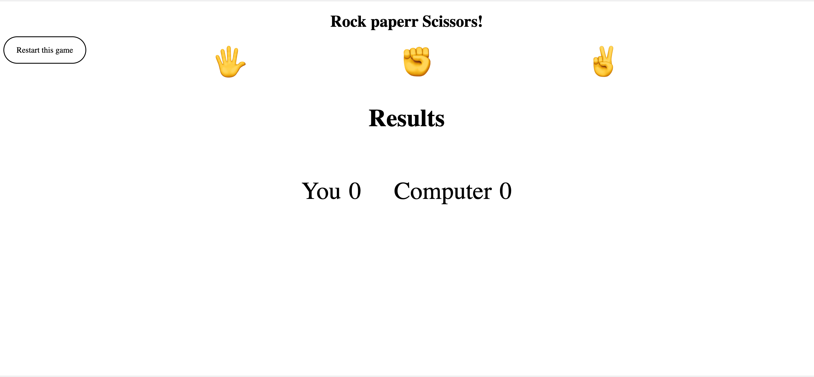
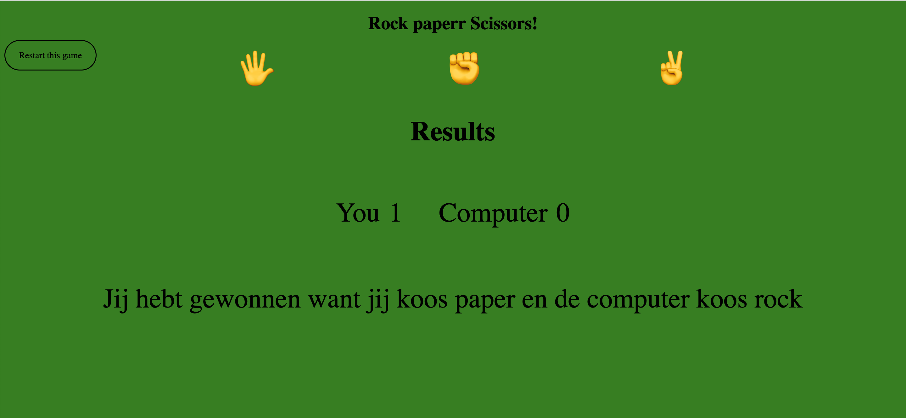
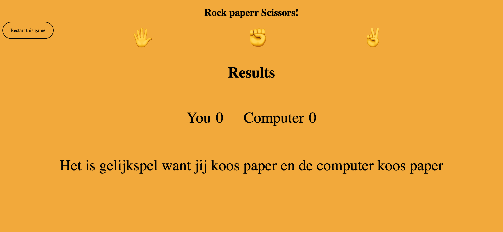
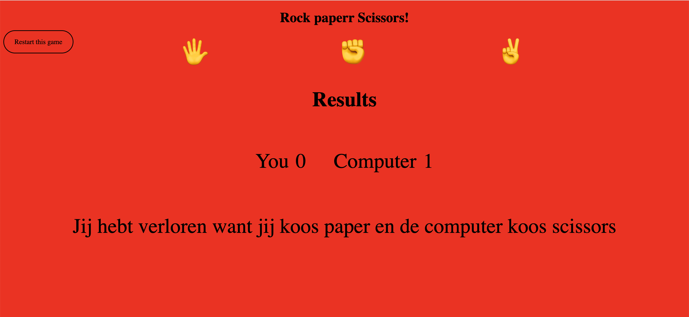

Vandaag gaan we het populaire kinderspel, blad steen schaar maken.
In blad steen schaar heb je 3 keuzes namelijk
- Blad
- Steen
- Schaar
Wie had dat nu verwacht? De spelregels zijn als volgt:
- Blad wint van steen,
- Steen wint van schaar,
- En tenslotte wint schaar van blad
Dit project zal er zo als volgt uit zien:
Begin
Winst
Gelijkspel
Verlies
Om dit project te realiseren zullen we gebruikmaken van
- HTML
- CSS
- JavaScript
Je zult zien dat je geen code-wizz moet zijn om een leuke interactieve beginners spel te maken.
Stap 1 - Mappen en Bestanden
We hebben een code-editor nodig. In de workshop gebruiken we Visual Studio Code.
- 1.1 Maak een nieuwe map aan en geef die als naam blad-steen-schaar.
Je kan deze map overal maken, in dit geval is deze map aangemaakt op het bureaublad.
- 1.2 Rechtsklik op de folder en je zal de optie ‘open with code’ zien, druk erop.

Het resultaat zal een lege vscode folder zijn.

Maak de onderstaande folders aan en steek onderstaande files in.

- 1.3 Start de live server door rechtsonder de blauwe balk te klikken op Go Live.
Jouw standaard browser zal nu gestart worden en je zal een blanco webpagina zien!
GREAT SUCCES
Stap 2 - HTML & CSS
Nu is het tijd om die codeerspierballen boven te halen.
- 2.1 Kopieer onderstaande code in jouw Index.html bestand. Bewaar vervolgens dat bestand.
Dit is een basis-structuur waarin we verder werken.
Kopieer onderstaande code in jouw main.css dit zal alles bevatten om het spel vorm te geven.
- 2.3 Bekijk het resultaat in de browser (de url is hoogstwaarschijnlijk: http://127.0.0.1:5500/).
Om onze applicatie vorm te geven kun je deze onderstaande code toevoegen aan de html. (deze code moet in de body staan)
Deze code geeft dit als resultaat

De movelist was leeg, deze lijst is nodig om te mogelijke keuzes aan te spreken, om de movelist op te vullen heb je deze onderstaande code nodig. Deze code moet je tussen de ul (unordered-list) genaamd move—list steken.
Dit is alle html code die we nodig hebben voor dit spelletje.
Nadat je alles hebt gekopieerd, zal je dit resultaat bekomen door de magie van HTML en CSS samen te voegen.

We zijn nu halfweg klaar met ons project, we hebben tot nu toe de blokken(HTML) van ons huis(applicatie) gebouwd en een likje verf(CSS) meegegeven, het enige wat nog overschiet is de interactiviteit(javascript) erin steken. Wat voor nut heeft een huis als je niet erin kan slapen?
Stap 3 - INTERACTIVITEIT MET JAVASCRIPT
Iedereen herinnert hem zich zijn eerste code die hij of zij met javascript heeft geschreven, namelijk.
Console.log(‘Hello World’);
- 3.1 Om te beginnen moeten we globale waarden definieren voor onze applicatie, deze waarden zorgen voor de connectie tussen HTML en de JS.
Door gebruik te maken van let resultaat = document.getElementById(‘resultaat’), is de brug tussen

en let resultaat gelegd, deze heeft nu een (voorlopige) waarde van 0; later gaan we die opvullen met een functie die we hier onderaan gaan schrijven.
- 3.2 Vaste beginwaardes meegeven.
Hier declareren we de beginwaardes van ons project zodat we altijd van 0 beginnen bij een nieuw spel. En we maken ook de moveArray aan, dit is een container met de huidige (legale) opties.
- 3.3 Functie computerNumberGenerator
Deze functie zorgt ervoor dat de computer number op lijn 4 een waarde krijgt tussen 0 en 2.
Dit is bepaald door de moveArrayLength: die bedraagt hier 3 want we hebben maar 3 opties in onze array, mocht de array 5 opties bevatten dan zou deze functie een getal genereren tussen 0 en 4.
- 3.4 Alle functies toevoegen per move (Rock,Paper,Scissors)
- 3.4.1 Rock
- 3.4.2 Scissors
- 3.4.2 Paper
- 3.5 Een laatste functie die de pagina herlaadt zodat je opnieuw kan beginnen.
- 3.6 Resultaat Javascript
Indien je alle stappen aandachtig hebt gevolgd dan moet je volledige resultaat als volgt uitzien.
Als je alle stappen schoon gevolgd hebt, dan zul je kunnen beginnen met het spel en zal het zo eruit zien
of

of

of